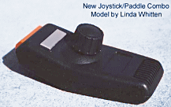

|
In
November 1982
Atari released its newest and most powerful home video game console, originally
shown as The Atari Video System X (VSX) the Atari 5200 was born.
With state of the art technology brought over from the Atari 400/800 computer
systems the Atari 5200 packed a mean punch and came in a really mean looking
case as well. The Atari 5200 represented a pushing of the
envelope in video game systems. With START, PAUSE and RESET
buttons on its all new controllers, Atari was hoping to give its gamers the best
it could offer.
Many people
thought the Atari 5200 was Atari's answer to the Colecovision, however the Atari
5200 was meant to be the Intellivision killer. Intellivision always
boasted about its 16 position controller versus Atari's 8 position so Atari
fired back with a full 360 degree speed sensitive joystick which was a brilliant
design... except it had several short comings, the joysticks while highly
innovative, but they did not self-center. The firing buttons were soft
rubber making them difficult to use. The controllers were innovation
overkill.
It should be noted, that during the course of
Atari's support of the Atari 5200, 9 revisions of the Atari 5200 joysticks were
made. The rubber base was made thicker, the joystick stalk was shortened and
the "flex circuit" improved. Atari was also working on a new self-centering
joystick as well as an Arcade joystick.

|
|
The
Atari 5200 was cancelled before these new controllers were completed and
released.) The other problem with the Atari 5200 were its games, they were
the same tired old releases that had already been seen time and again and
although much improved over their Atari 2600 counterparts, gamers wanted to see
new game titles, meanwhile Coleco was packing in the hottest game in the
arcades: Donkey Kong. Also Coleco had an Atari 2600 compatible
interface before Atari would release it own delayed adapter. Add to that the fact
that the Coleco had all sorts of new and exciting controllers and promises,
while all Atari had for the 5200 was a very well made and very expensive TrakBall
controller designed by Dan Kramer.
Talk of
a computer keyboard for the Atari 5200 was mentioned, but due to a conflict with
Atari's Home Computer Division, the Atari 5200 keyboard was cancelled.
The
Atari 5200 had a hard time of it, still the system had a very nice sized library
of games coming out for it, and outsold its new competitor - the Colecovision.
However Great Videogame Crash did in the Atari 5200
before it even had a chance to reach its full potential... besides, Atari had a
trump card up its sleeve to fix the Atari 5200 problem... The Atari 7800. |